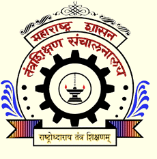

Government Polytechnic,Khamgaon

Government Polytechnic, Khamgaon
It was started in the year 1961 in the Buldhana district. This caters to the aspiration of the people in the region. This Institution is located on Khamgaon - Jalamb link road at a distance of 2.5 Km from Bus Stand & nearly 2 Kms from railway station. The Institution is spread over a piece of land admeasuring 13 hectares in the premiere location of Khamgaon town.
Location:
Khamgaon is a small town with population over 1 lac. It is a major taluka of Buldana district. It is situated on national highway no 6 connecting Mumbai (583 KM) towards west & Nagpur (300 KM ) towards east. It is also connected with Mumbai Howarah central railway at Jalamb junction. The nearest air strips for air travel at Aurangabad (210KM) & Nagpur from Khamgaon. The Holy Saint Shri. Gajanan Maharaj had taken Samadhi at Shegaon which is only 17 KMs away from here. The world famous crator of Lonar is about 100Km & another historical town of Sindhkhedraja, a birth place of Maa Jijaau mother of Shri. Shivaji Maharaj is about 80Km. The premises of institution are spread over a sprawling area of 13 ha. situated on Jalamb road nearly 2.5Km. from Khamgaon railway station and 3Km from S.T. Bus stand.
x